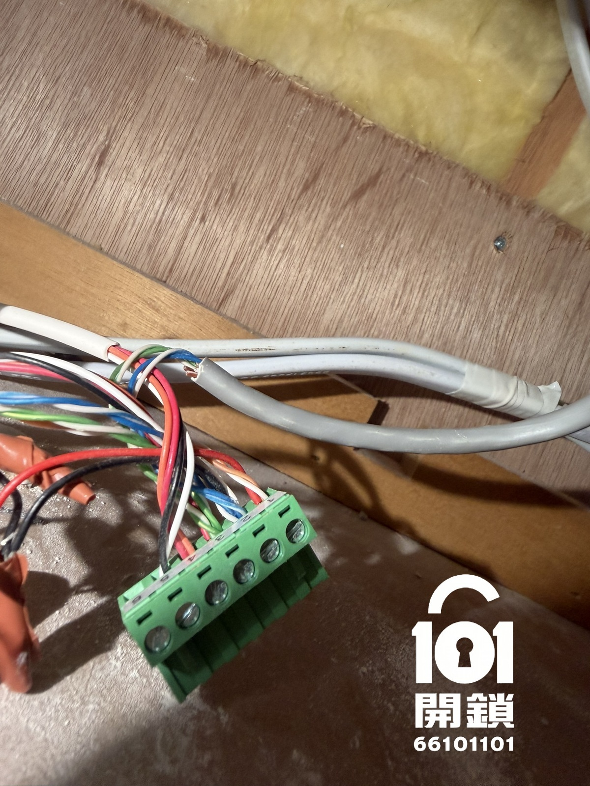
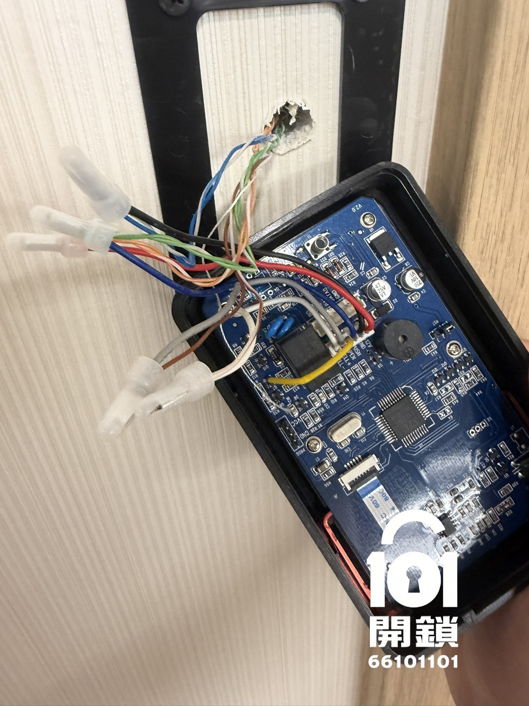
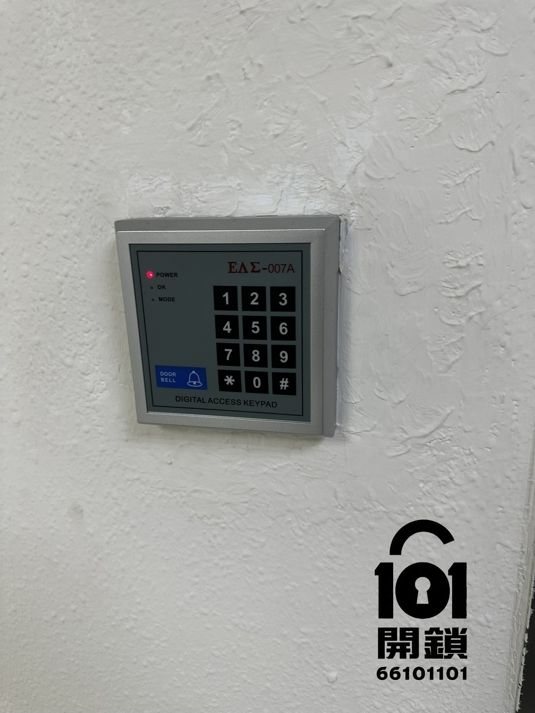
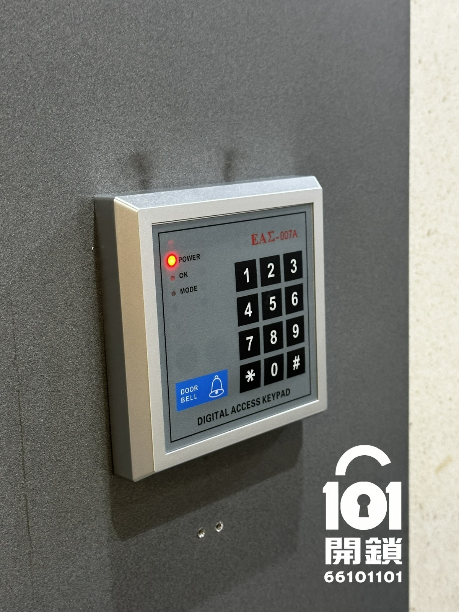
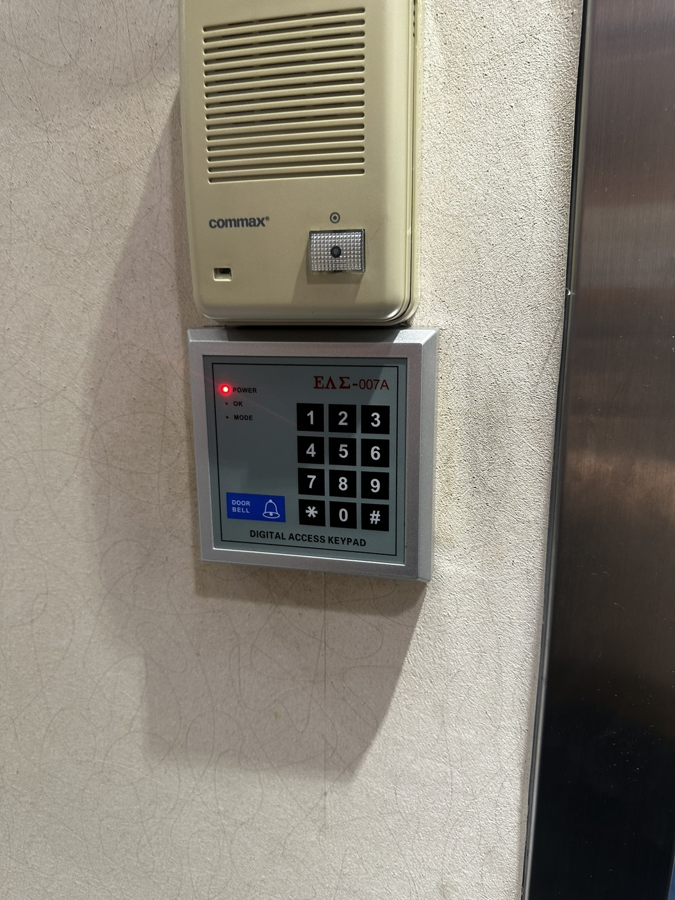
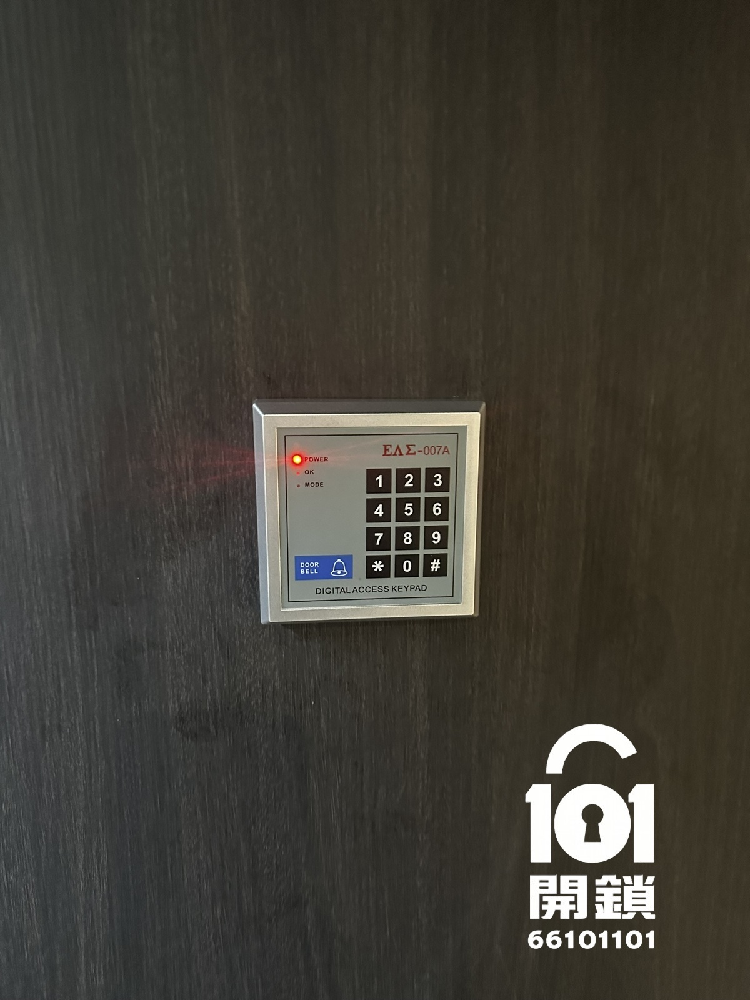
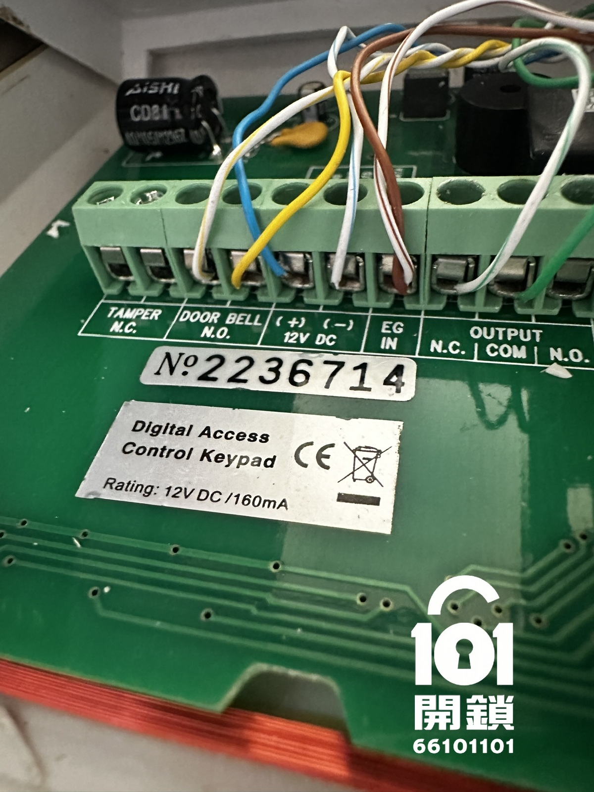
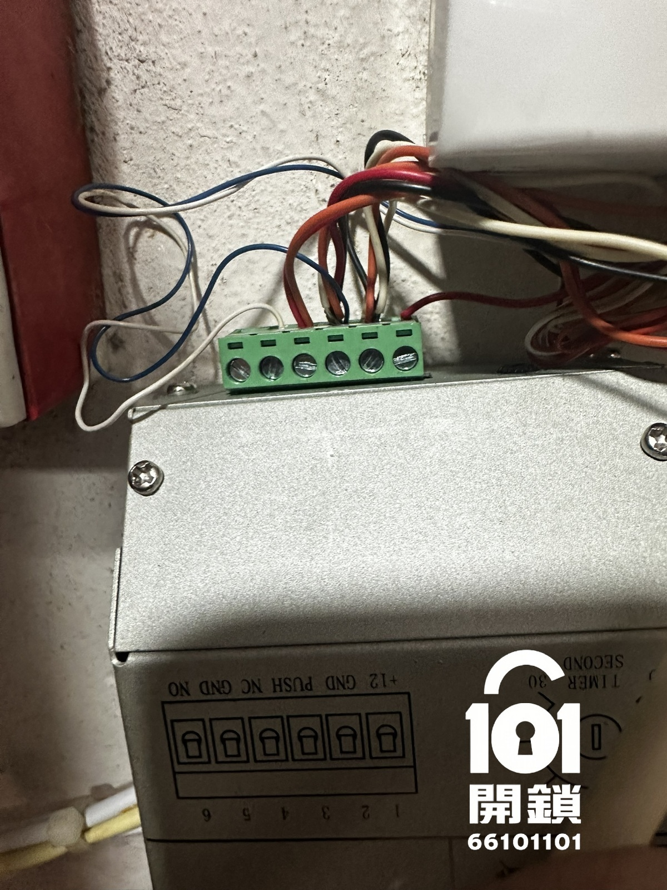

門禁電鎖與門體
電磁鎖、陰極鎖、陽極鎖或電插鎖需配合木門、玻璃門、鋁門及門框結構。
合適的門禁系統方案需要把門禁電鎖、身份驗證、控制器及供電整合處理，並按現場門種和使用方式選擇設備。
電磁鎖、陰極鎖、陽極鎖或電插鎖需配合木門、玻璃門、鋁門及門框結構。
拍卡門禁、密碼門禁、指紋或手機憑證的管理成本、安全程度和離職回收方式不同。
包括門禁控制器、出門掣、火警接口、後備電池、門磁和時間表設定。
以下相片展示密碼門禁鍵盤、門禁控制板、供電及接線檢查。門禁系統維修前需先檢查控制器、電源、線路及門禁電鎖，才能判斷故障位置。








相片可作初步判斷，但門禁系統的走線、供電、門框和消防接口通常需要現場檢查。
要視乎卡片制式、頻率、控制器兼容性及現有系統管理權限，不能單靠外觀判斷。
不一定。門禁系統控制出入；考勤系統涉及員工紀錄、報表和私隱管理，須先界定功能及資料責任。